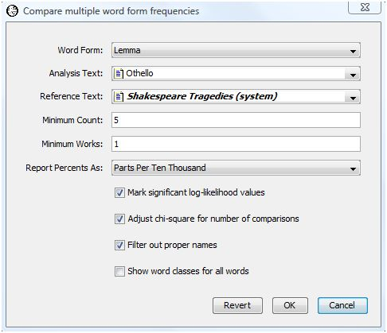
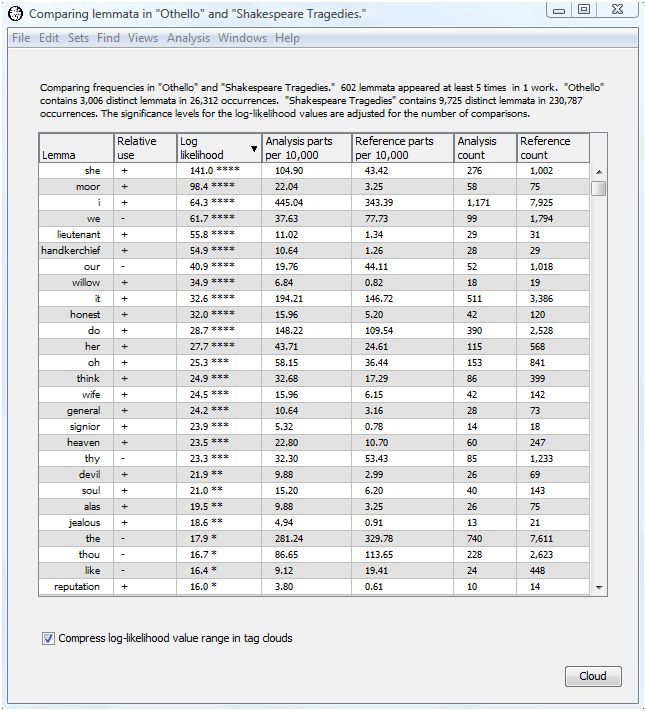
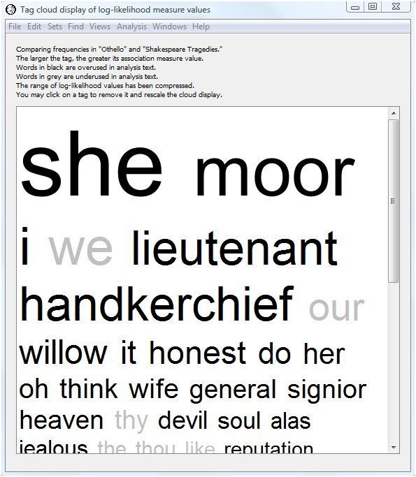
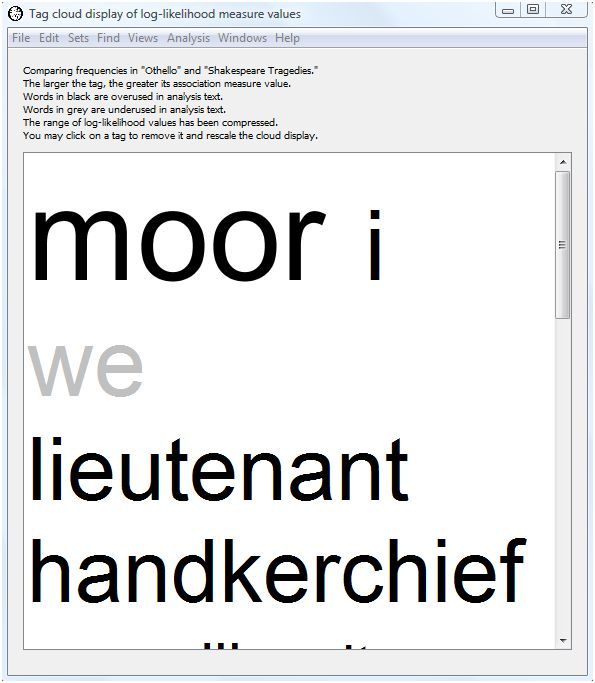
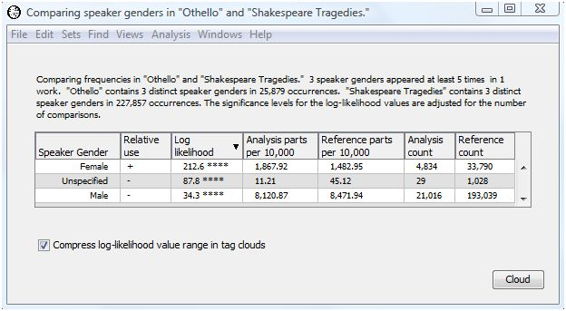
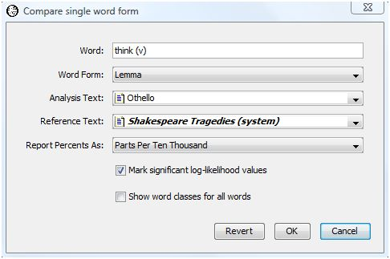
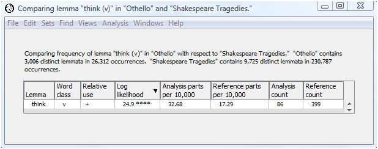

|
|
|
Comparisons tell you whether there is more of this here or less of that there. Knowing that individual word forms in one text occur more or less often than in another text may help characterize some generic differences between those texts. Statistics on how often the words occur add rigor and provide a framework for judging whether the observed differences are likely or unlikely to have occurred by chance, and so deserve futher attention and interpretation.
WordHoard allows you to compare the frequencies of word form occurrences in two texts and obtain a statistical measure of the significance of the differences. WordHoard uses the log-likelihood ratio G2 as a measure of difference. To compute G2, WordHoard constructs a two-by-two contingency table of frequencies for each word.
| Analysis Text | Reference Text | Total | |
| Count of word form | a | b | a+b |
| Count of other word forms | c-a | d-b | c+d-a-b |
| Total | c | d | c+d |
The value of "a" is the number of times the word occurs in the analysis text. The value of "b" is the number of times the word occurs in the reference text. The value of "c" is the total number of words in the analysis text. The value of "d" is the total number of words in the reference text.
Given this contingency table, WordHoard calculates the log-likelihood ratio statistic G2 to assess the size and significance of the difference of a word's frequency of use in the two texts. The log-likelihood ratio measures the discrepancy of the the observed word frequencies from the values which we would expect to see if the word frequencies (by percentage) were the same in the two texts. The larger the discrepancy, the larger the value of G2, and the more statistically significant the difference between the word frequencies in the texts. Simply put, the log-likelihood value tells us how much more likely it is that the frequencies are different than that they are the same.
The log-likelihood value is computed as the sum over all terms of the form "O * ln(O/E)" where "O" is the observed value of a contingency table entry, "E" is the expected value under a model of homogeneity for frequencies for the two texts, and "ln" is the natural log. If the observed value is zero, we ignore that table entry in computing the total. WordHoard calculates the log-likelihood value G2 for each two-by-two contingency table as follows.
E1 = c*(a+b)/(c+d)
E2 = d*(a+b)/(c+d)
G2 = 2*((a*ln(a/E1)) + (b*ln(b/E2)))
To determine the statistical significance of G2, we refer the G2 value to the chi-square distribution with one degree of freedom. The significance value tells you how often a G2 as large as the one WordHoard computed could occur by chance. For example, a log-likelihood value of 6.63 should occur by chance only about one in a hundred times. This means the significance of a G2 value of 6.63 is 0.01 .
Here are the breakpoint (percentage point) values for G2 for commonly used levels of significance.
| G2 | Significance |
| 15.13 | p < 0.0001 |
| 10.83 | p < 0.001 |
| 6.63 | p < 0.01 |
| 3.84 | p < 0.05 |
When you compute many log-likelihood ratio values some will appear significant by chance alone. For example, if we compute one thousand log-likelihood values, we can expect about ten of them to exceed the breakpoint value of 6.63 by chance. This may lead us to accept a frequency difference as significant when it is really just a chance fluctuation.
One way to deal with this problem is to "up the ante" by adjusting the breakpoint values for the number of comparisons. WordHoard allows this as an option. The method used by WordHoard is called the Sidak correction. It is very conservative, particularly as the total number of comparisons increases.
The Sidak correction computes an adjusted significance level "alpha" as follows.
adjusted alpha = 1 - (1 - alpha)1/k
where "alpha" is the nominal significance level and "k" the number of comparisons.
For example, let's say there are k=1,000 comparisons and alpha=0.01 . The nominal breakpoint for achieving a 0.01 level of significance is 6.63 . The Sidak adjusted level is 1 - (1 - 0.05)1/1000 or 0.000051 . This is roughly the same as dividing the nominal significance level by the number of comparisons. The corresponding adjusted breakpoint for G2 is 16.4 .
As an example, let's see how comparing word form frequencies reveals some properties of Shakespeare's play "Othello, the Moor of Venice." The comparison we select will highlight lemmata that are disproportionately common or rare in Othello with respect to Shakespeare's tragedies as a whole. To compare the lemmata counts, select "Compare Many Word Forms" from the Analysis menu. WordHoard displays the following dialog.

The dialog fields are as follows.
Word Form specifies the type of word form to compare. You may specify lemma, spelling, word class, speaker gender, speaker mortality, verse, or metrical shape. Some word types are only applicable to specific corpora. For example, metrical shape only applies to certain works in the Early Greek Epic corpus. We select lemma for our analysis.
Analysis Text provides the first work or set of works to be compared. This may be a corpus, work, work set, or word set. We select Shakespeare's play "Othello".
Reference Text provides the second set of works with which the word form frequencies in the analysis set will be compared. This must be different from the analysis text. We select the work set "Shakespeare's Tragedies" as the reference text.
Minimum count specifies the minimum number of times a word form must appear in the combined analysis and reference texts to be displayed in the output. Five is the default minimum count, which is what we select.
Minimum works specifies the minimum number of works in which a word form must appear in the combined analysis and reference texts to be displayed in the output. The default minimum works count is one, and that is what we select.
Report percents as specifies how WordHoard should report frequency percents in the output.
Percents reports the percents as is.
Parts per ten thousand reports the percents as fractional parts per ten thousand. This default mode of presentation, traditional in the humanities, expresses the percent values as frequencies in a normalized document size of ten thousand words.
Rounded parts per million reports the percents as rounded parts per million. This is similar to parts per ten thousand, except that the values are based on a normalized document size of one million words, and are rounded to the nearest whole number.
We select "Parts per ten thousand".
Mark significant log-likelihood values appends asterisks to each significant log-likelihood value. When the significance values are not being adjusted (see the next option below), the asterisks indicate the following levels of significance.
| **** | Significant at 0.0001 level |
| *** | Significant at 0.001 level |
| ** | Significant at 0.01 level |
| * | Significant at 0.05 level |
We enable this option.
Adjust chi-square for number of comparisons adjusts the breakpoints for assessing the significance of the log-likelihood statistics as described in the section Adjusting significance levels for many comparisons above. We do not enable this option.
Filter out proper names suppresses the display of statistics for proper names. Usually when you compare texts you are not interested in seeing differences in the counts for proper names. We enable this option.
Show word classes for all words asks WordHoard to display the word class for spellings and lemmata in the output. If you do not enable this option, WordHoard displays only the spelling or lemma text. We do not enable this option.
The output of the comparison analysis using our selected dialog settings follows.

The header tells which texts are being compared and the total number of word forms in each. Othello contains 3,006 distinct lemmata and 26,312 in all. The Shakespeare tragedies contain 9,725 distinct lemmata and 230,787 in all.
The comparison output contains seven columns, initially sorted in descending order by log-likelihood value. This allows you to see right away which word forms show the greatest difference in relative frequency between the analysis and reference texts.
The first column contains the word form text. In our example, the first column shows the lemma.
The next column contains the word class for spellings and lemmata when the "Show word classes for all words" option is enabled in the compare many words dialog. Since we did not select that option, the word class column does not appear.
The next column contains a "+" is the word form is overused in the analysis text with respect to the reference text, a "-" id the word form is underused, and a blank if the word form use is the same in both texts.
The next column contains the G2 log-likelihood value. Trailing asterisks indicate significant values of G2 when the "Mark significant log-likelihood values" option is enabled. We enabled that option, so the asterisks appear.
The next column shows the (possibly normalized) percent of occurrence of the word form in the analysis text. The sample output expresses this percent as parts per ten thousand.
The next column shows the (possibly normalized) percent of occurrence of the word form in the reference text. The sample output expresses this percent as parts per ten thousand.
The next column shows the actual number of times the word form occurred in the analysis text.
The last column shows the actual number of times the word form occurred in the reference text.
The analysis indicates that "she," "moor", "i," "we", "lieutenant," "handkerchief," "our", "willow," "it," "honest," "do," "her", "oh", "think", "wife", "general", "signior", "heaven", "thy", and "devil" are the twenty lemmata most over or underused in Othello as compared with the tragedies as a whole. "She" and "wife" probably reflect the importance of Desdemona. "Willow" reflects the famous Willow Song of Desdemona. "Moor" and "general" reflect Othello. "Lieutenant" and "handkerchief" reflect the machinations of Iago. "I" gets much more use in Othello than the tragedies as a whole, presumably because of the amount of interior dialog, while "we" gets less. "Honest" reflects Othello's preoccupation with Desdemona's faithfulness and the honesty of his subordinates. If you continue down the list of words others pop out such as "jealous", "reputation" and "confess".
This example demonstrates just how much looking at simple word frequency differences can illuminate the text of a work.
As an alternative to looking at this dense table of numbers, WordHoard allows you to display the comparison results in a tag cloud. A tag cloud displays words or phrases in different font sizes. To create a tag cloud from the comparison output results, select the "Cloud" button at the bottom of the output table.

The larger the text for a word, the higher its log-likelihood value. This allows you assess at a glance the relative importance of the overuse or underuse of a lemma. Words displayed in black are overused in the analysis text (here Othello), while words displayed in gray are underused in the analysis text. WordHoard assigns a font size of 100 points to the word with the largest (scaled) log-likelihood value. Words whose font size ends up smaller than 3 points are not displayed in the tag cloud.
Notice we selected the checkbox "Compress log-likelihood value range in tag clouds" at the bottom of the tabular output. Selecting that option scales the log-likelihood values before generating the tag cloud using those values to determine the size of the text for each corresponding word. WordHoard uses a transformation based upon the inverse hyperbolic sine of the log-likelihood values. This helps to prevent exceptionally large log-likelihood values from dominating the tag cloud display.
The scaling transformation is defined as
scaled log-likelihood value = 2.0 ^ asinh( log-likelihood )
The inverse hyperbolic since has the useful properties of being nearly linear near zero and exponential for large values, with a smooth transition between.
Even when scaled the first few words may dominate the tag cloud display so that less important words appear in very small font sizes. You may click on a word in the tag cloud to remove it from the display. If you click on the words with the largest font size, the font sizes for the remaining words will be rescaled and the tag cloud redrawn. For example, clicking on the words "she" and "we" in our tag cloud above removes those words from the cloud and results in a revised display.

Note that "moor" is now the largest word and that the font sizes for subsequent words have also been scaled up.
By default WordHoard includes all the words in the output table in the tag cloud. If you wish to display a subset of the words, you may select the table rows corresponding to the words of interest, and then select the "Cloud" button. Only the words you select will appear in the tag cloud.
You may use the "Save As" command on the "File" menu to save the tag cloud to a file. You may choose to save the file in HTML format so that you can view it with a web browser; as an image file in JPEG or PNG format; or as plain text (in which case the relative text sizes will not be visible).
Let's rerun the analysis choosing speaker gender as the word form for comparison. Here is the output.

Women get more speaking time in Othello than in the tragedies as a whole. This presumably reflects the importance of Desdemona in Othello. As a result, men get less speaking time in Othello than in the tragedies as a whole.
If you are interested in looking at differences for specific word forms you can choose "Compare Single Word Form" from the Analysis menu. This displays a dialog similar to that for comparing many word forms but allows you to specify the word form of interest.

Let's see if there is a difference in frequency for the lemma "think (v)" in Othello as compared with the Shakespeare Tragedies as a whole. Press the OK button to show the results.

The log-likelihood value of 24.9 shows that the lemma "think (v)" is used significantly more often in Othello than in the tragedies as a whole. In fact, "think (v)" is used almost twice as much in Othello as the tragedies as a whole (32.68 parts per 10,000 for Othello as compared with 17.29 parts per 10,000 in the tragedies). This is not surprising since interior dialog plays such a large part in Othello.
The output for "think (v)" is the same as we received when comparing all the words of Othello with the tragedies. Oftentimes it is worth the small amount of extra computing time to perform the full comparison analysis on all the words even if you are interested in just a few. You may uncover a result that surprises you.
Ted Dunning's paper discusses the use of the log-likelihood test for general textual analysis.
Rayson and Garside discuss the use of the log-likelihood test for comparing corpora.
|
|
|